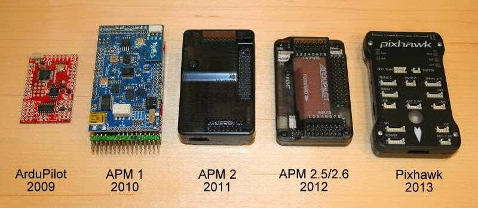

History of ArduPilot¶
{kind=link}
May 2007 - Chris Anderson starts DIYDrones.com while building his Lego mindstorm base UAV.
Sep 2008 - Jordi builds traditional helicopter UAV able to fly autonomously and wins the first Sparkfun AVC competition.

Jordi’s traditional helicopter¶
2009 - Chris Anderson & Jordi Munoz found 3D Robotics
May 2009 - First ArduPilot board (using thermopiles) released by Jordi/3DRobotics
Nov 2009 - ArduPilot code repository created by Jordi
Nov 2009 - First version of ArduIMU written by Jordi, Doug Weibel, Jose Julio using DCM from William Premerlani
Nov 2009 - Feb 2010 – ArduPilot rewritten from scratch (v2.5) by Jason and includes interrupt driven RC input, RC throttle failsafe, RTL, Loiter, Circle, Crosstrack correction, decent stabilization, Fly-By-Wire, system events, 4 channel RC output, and 2-way telemetry. (Post)
Dec 2009 - First IMU based autonomous plane mission flown by Doug with modified ArduPilot v2.4.
2010 - APM1 released by 3d Robotics
Early 2010 - ArduPilot 2.6 released by Doug and Jason with improved throttle control, and ArduIMU support.
Summer 2010 - APM Code development:
Jason - Mission scripting, Flight modes, Navigation
Jose - Code Libraries, DCM, and HW sensor support
Doug - Advanced flight control, logging, DCM
MikeS - Parameters, CLI, Fast Serial, advanced hardware optimizations
May 2010 - ArduPilot merges with AeroQuad (including Jani Hirvinen) and begins work on CopterNG
June 2010 - APM 1 flies first autonomous and scripted mission in SW (post)
June 2010 - APM 1 takes first autonomous Plane flights
July 2010 - Perl based Hardware-in-the-loop developed by Jason for Xplane for testing new APM mission scripting commands in (later integrated into Mavlink)(Post)
Aug 2010 - Jani/jDrones ships first DIY quad frames which were adopted as the original standard
Oct 2010 - CopterNG (AeroQuad/ArduCopter merged code) project abandoned by ArduPilot team and handed over, with encouragement, to the ArduPirates team for further development. Jason restarts Copter with alternative control logic based on Plane making Copter autonomous. Adds Loiter, Circle, RTL, Mission scripting, failsafe, takeoff, landing, etc.
Aug 2010 - the Mission Planner is released by Michael Oborne
Aug 2010 - TradHeli supportadded by Randy
Dec 2010 - First successful fork of ArduPilot code as MegaPirates group extends original CopterNG code
April 2011 – First fully autonomous Copter mission flown by Jason at Sparkfun AVC
April 2011 - Laser Navigation made the first piece of 32 bit hardware capable of running the ArduCopter software
2011 - APM2 released by 3D Robotics
Nov 2011 - AutoTester is created by Tridge
2012 - APM2.5/2.6 released by 3D Robotics
Feb 2012 - Jason asks Randy to take over and be lead developer of Copter, Doug goes off to get his PhD and Tridge takes over Plane
Feb 2012 - Marco Robustini joins as lead Copter tester
July 2012 - PX4 released by ETH (Lorenz Meier,MikeS) / 3D Robotics
Aug 2012 - Hardware Abstraction Layer (AP_HAL) by Pat Hickey simplifies adding support for other boards
Oct 2012 - First TradHeli autonomous mission by Rob Lefebvre
Oct 2012 - Tridge and CanberraUAV win Outback Challenge with APM2 & Pandaboard
Nov 2012 - first APM2.5 clone appears
Dec 2012 - Successfully prototype of 3rd order complementary filter by Jonathan Challinger leads to Copter’s inertial based altitude hold by Randy and Leonard (AC2.9).
Jan 2013 - ArduPilot code moved from google code to github
Jan/Feb 2013 - Android GCSs appear (DroidPlanner from Arthur, AndroPilot from Kevin Hester)
Apr 2013 - Plane L1 waypoint following by Paul Riseborough, Brandon Jones, Tridge
May 2013 - Copter inertial navigation support for waypoint navigation by Leonard and Randy (AC3.0)
Jul 2013 - Plane integrated speed and height control by Paul Riseborough, Tridge
Sep 2013 - Flymaple board support by Mike McCauley, Tridge
Nov 2013 - Pixhawk released by ETH (Lorenz Meier,MikeS)/ 3D Robotics
Dec 2013 - BeaglePilot project created by Víctor Mayoral Vilches and Siddharth Bharat Purohit to port APM codebase to Linux. The project was by Andrew Tridgell, Philip Rowse and others and funded by 3DR, Google (through the Google Summer of Code) and BeagleBoard.
Jan 2014 - Extended Kalman Filter added for more reliable attitude and position information by Paul Riseborough, Tridge
Mar 2014 - VRBrain boards support added by Emile Castelnuovo and Tridge
Mar 2014 - Emlid presented Navio, first Raspberry Pi autopilot shield that allows to run ArduPilot directly on Raspberry Pi.
Aug 2014 - First Plane flight on Linux board (Pixhawk Fire cape)
Sep 2014 - Tridge & Canberra UAV win the Outback Challenge with an ArduPilot based UAV plane (Tridge’s debrief).
- Sep 2014 - First Copter flight on Linux
+board (Pixhawk Fire cape)
Oct 2014 - DroneCode foundation is formed (announcement)
Oct 2014 - First report of Plane being successfully used in search & rescue including finding a missing light plane in Florida.
Feb 2015 - Erle Robotics launches DIY kits for Linux drones based on APM.
May 2015 - First documented multi-vehicle flight using only a single ground station (first three, then fifty!).
June 2015 - 3DR ships Solo, the first RTF copter with built in companion computer
June 2015 - Parrot Bebop port’s first successful flights
Aug 2015 - Michael Clement & Michael Day fly 50 arduplanes in a multi-vehicle environment
Sep 2015 - First major news event involving a misbehaving pilot of an ArduPilot vehicle (a Solo)
March 2016 - 3DR ceases direct funding of ArduPilot community as it cuts jobs.
March 2016 - Formation of the ardupilot.org non profit organisation and new website.
May 2016 - Flirtey delivery drone (using ArduPilot) is entered into Smithsonian Air and Space Museum.
Sep 2016 - Flymaple board support removed ( not actively tested or used , also lacks a maintainer see PR #4191 ).
Sep 2016 - Relationship with 3DR, Chris Anderson and PX4 team lead sours as DroneCode Platinum board members outvote Silver board members to remove GPLv3 projects including ArduPilot from DroneCode.
Sep 2016 - ArduPilot begins ArduPilot Partners group.
Sep 2016 - Canberra UAV places 1st in Medical Express 2016 competition (aka Outback Challenge) (debrief)
Oct 2016 - Copter-3.4 release including object avoidance.
Feb 2017 - ArduSub officially joins ArduPilot and merges back to master
Feb 2017 - ArduPilot developer unconference in Canberra Australia (Tridge, PaulR, MichaelO)
May 2017 - Google Summer of Code funds 4 developers for the summer (see SafeRTL)
July 2017 - Copter-3.5 release including Visual Odometry and Pozyx support for non-GPS navigation, AutoTune gets position hold, Solo support
Aug 2017 - SkyRocket announces release of ArduPilot based SkyViper GPS Streaming drone (blog)
Aug 2017 - Rover-3.2.0 released “onion” architecture, new layered rate and speed controllers, skid-steering vehicle support, SmartRTL
May 2018 - Google Summer of Code funds 5 developers for the summer. Successful projects include Balance Bot support.
May 2018 - Rover-3.3.0 released including circle and polygon fences, simple object avoidance, boats
Jun 2018 - Rover-3.4.0 released including “Lane based speed control”, Loiter for boats, omni rovers, vision based position estimates from ROS
Aug 2018 - Plane 3.9.0 released with ChibiOS support, support for many smaller autopilot, better VTOL support
Oct 2018 - Copter-3.6.0 released with ChibiOS support, support for many smaller autopilots, DShot ESCS, Follow mode
Feb 2019 - Rover-3.5.0 released including Sailboat support, Follow and Simple modes
Aug 2019 - ArduPilot flies over the North Pole, Video
Sep 2019 - Plane 4.0.0 released with many DroneCAN enhancements and AP_Periph firmware system
Nov 2019 - Rover 4.0.0 released with Boat and Sailboat improvements, OSD support, new Object Avoidance modes
Dec 2019 - Copter 4.0.0 with RCx_OPTION support, LUA Scripting support, new modes, up to ten battery monitors
Note
The above list includes many of the major milestones for the project. Please see the Copter.cpp or the GitHub contributors graph for a more complete list of contributors to the project.
[copywiki destination=”copter,plane,rover,planner,planner2,antennatracker,dev,ardupilot,mavproxy”]